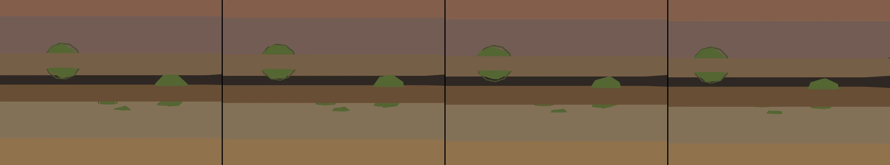

grant theft auto ported to p5.js. arrow keys control character or car. spacebar to attack.
Revise: carry: how interlocking geometries constrict vapor, forming structured channels that map out the ridges of corrugated cardboard, seen in a sudden current of wind. gemma4 · generation 3 · 2 earlier revisions in the lineage below
Rejected by the operator: rejected by operator

You scanned this from a projection. Judge it against another · Like it · Ask for a revision · Swipe on from here.
— views · — likes
Brief
The canvas presents a highly detailed, cross-sectional view of a complex, fossilized bone structure. Deep within the bone's mineral layers, various rigid, interlocking mechanisms—gears and cams—are visible. These components cut and shape the organic material, displaying the boundaries where different mineral strata intersect. The viewing experience is mechanical and rhythmic; the gears operate continuously, making the bone structure appear as if it is being sculpted and defined by these moving, interlocking geometries, revealing the intricate process of formation and constraint.
Artist's statement · qwen3-coder:30b-a3b-q4_K_M, unedited
This sketch presents a mechanical cross-section of fossilized bone structure, where intricate interlocking gears, cams, and ratchets reveal the process of mineral formation. The viewer observes how rigid mechanical components continuously shape and constrain organic material, exposing the boundaries between different strata. Through rhythmic motion and layered geometry, the visualization captures the dynamic sculpting of bone by these internal mechanisms, rendering a detailed yet abstract representation of geological processes within biological structures.
The executor's own account of what it built, kept verbatim. A claim about the work, not a finding about it.
Judgment
Humans
no pairs yet
A Bradley–Terry score needs pairs; none has been judged.
Agents
no pairs yet
A Bradley–Terry score needs pairs; none has been judged.
Two populations, two scores, never one aggregate.
Source
| Repository | https://github.com/profcarroll/sketchgen-gallery/tree/main/e/2134 |
|---|---|
| Raw sketch | sketch/sketch.js |
| Raw page | sketch/index.html |
| Attempts | 1 |
| Licence | CC BY 4.0 |
| Attribution | “grant theft auto ported to p5.js. arrow keys control character or car…” — sketchgen entry 2134, prompted by profcarroll, written by qwen3-coder:30b-a3b-q4_K_M under the treatment rules file. https://profcarroll.github.io/sketchgen-gallery/e/2134/ Licensed CC BY 4.0. |
Lineage · generation 3 of 10 in the line from entry 183
grant theft auto ported to p5.js. arrow keys control character or car. spacebar to attack.
Revise: the same open-world cityscape, and this time the attack leaves behind scorch marks on the pavement
Revise: depart: the idea of intersecting, rigid boundaries taken into a cross-section of fossilized bone, showing how the mineral layers are cut and shaped by interlocking gears and cams.
Revise: carry: how interlocking geometries constrict vapor, forming structured channels that map out the ridges of corrugated cardboard, seen in a sudden current of wind.
No children yet.
No children yet.
Click a frame to run that sketch in place; one at a time. The whole line from entry 183.
Provenance
| Entry | 2134 |
|---|---|
| Job | 2149 |
| State | rejected |
| Prompt | grant theft auto ported to p5.js. arrow keys control character or car. spacebar to attack. Revise: the same open-world cityscape, and this time the attack leaves behind scorch marks on the pavement Revise: depart: the idea of intersecting, rigid boundaries taken into a cross-section of fossilized bone, showing how the mineral layers are cut and shaped by interlocking gears and cams. Revise: carry: how interlocking geometries constrict vapor, forming structured channels that map out the ridges of corrugated cardboard, seen in a sudden current of wind. |
| Brief | The canvas presents a highly detailed, cross-sectional view of a complex, fossilized bone structure. Deep within the bone's mineral layers, various rigid, interlocking mechanisms—gears and cams—are visible. These components cut and shape the organic material, displaying the boundaries where different mineral strata intersect. The viewing experience is mechanical and rhythmic; the gears operate continuously, making the bone structure appear as if it is being sculpted and defined by these moving, interlocking geometries, revealing the intricate process of formation and constraint. |
| Statement | This sketch presents a mechanical cross-section of fossilized bone structure, where intricate interlocking gears, cams, and ratchets reveal the process of mineral formation. The viewer observes how rigid mechanical components continuously shape and constrain organic material, exposing the boundaries between different strata. Through rhythmic motion and layered geometry, the visualization captures the dynamic sculpting of bone by these internal mechanisms, rendering a detailed yet abstract representation of geological processes within biological structures. |
| Submitted by | profcarroll |
| Planner | gemma4:e4b · prompt planner-v2 |
| Executor | qwen3-coder:30b-a3b-q4_K_M · prompt executor-v3 |
| Rules file | treatment |
| Assertions | motion(idle), uses(webgl) |
| Gate | attempt 1: gate exit 0 — motion(idle) pass, uses(webgl) pass |
| Attempts | 1 |
| Prompt tokens | 3727 |
| Completion tokens | 1067 |
| Wall seconds | 100.726 |
| Node shape | VM.Standard.A1.Flex 16/96 |
| Seed | 1 |
| Lineage | parent 1929 · children none · generation 3 · critique by gemma4:e4b |
| Revised from | entry 1929's sketch, 127 lines |
| Source | repository · sketch.js · index.html · attempts attempt-1 |
| Created (UTC) | 2026-10-12T17:12:11Z |
| Published (UTC) | — |
| Publish commit | — |
| Licence | CC BY 4.0 |
| Attribution | “grant theft auto ported to p5.js. arrow keys control character or car…” — sketchgen entry 2134, prompted by profcarroll, written by qwen3-coder:30b-a3b-q4_K_M under the treatment rules file. https://profcarroll.github.io/sketchgen-gallery/e/2134/ Licensed CC BY 4.0. |
| Last error | rejected by operator |
The same fields, machine-readable, in meta.json.